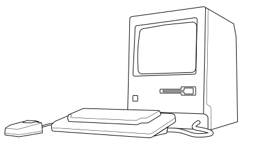

How a computer uses code: Binary code
By now, you should have got an understanding of simple codes and what sequencing can do. Before we dig a little deeper into how data is stored on DNA, we first need to understand how digital information is stored on a computer.
You probably have heard of the term "binary code" already. So in the next section, we try to understand the basic capabilities of this code.
Numbers on the base of 2
Base-10, that’s the system we are using mainly. It is the system we have in our day-to-day, no matter if it’s the price of a product in the supermarket, a street name, or telling the time. Each digit has ten options, starting with 0 up to the 10th digit 9. If it would hit this one, we increase the next higher digit. So if we count from 9 up, we increase the digit to its left to 1 and reduce the current to 0, we get 10.
If we split the numbers into a table, then each column would have a power of ten more.8 So one column with all the 1s, one with the 10s, one with the 100s, and so on. Each cell can have ten options. So—as we are used to—0, 1, 2, 3, 4, 5, 6, 7, 8, and 9. If the value goes above this limit, the next column counts one up. The table would look like this:
| 100 |
10 |
1 |
Total |
| 0 |
0 |
4 |
4 |
| 2 |
3 |
1 |
231 |
Then we add the numbers in each column to get the result of a row. Reading the table above would look something like this:
( 2 × 100 ) + ( 3 × 10 ) + ( 1 × 1 ) = 200 + 30 + 1 = 231
A number system of the base of 2 behaves similarly. But instead of having in each column on the power of 10, we multiply by the value 2. Hence the columns generate like this:1, 2, 4, 8, 16, etc. As we are on the base of two, each cell can only have two options: 0 or 1. The table would look like this:
| 4 |
2 |
1 |
Total |
| 0 |
0 |
1 |
1 |
| 0 |
1 |
0 |
2 |
| 0 |
1 |
1 |
3 |
Now we calculate in the same way. We add up the number of the table head times to the number we need:
( 0 × 4 ) + ( 1 × 2 ) + ( 1 × 1 ) = 0 + 2 + 1 = 3
Another way to think about counting in binary is to always start from the right and shift the digit one forward (to the left) if the value increases. If the shift up would hit a 1, then the number left to this increases, and all the lower digits get set to 0 again. Like we do with the power of ten, just after it would hit 2 already.
This might sound confusing, but try it out yourself below. Try to increase the numbers slowly. Type in the numbers you want to transform, or play around if you can generate the numbers you want in binary!
Change the number and see how the binary values change, or click on the binary values to see how the number changes. Try to increase the number using your arrow keys and see how the number changes steadily.
In computer code, this is the smallest unit existing. One digit is called a “bit” b. I assume you have heard this term before. In the following section, we will try to make something else out of these bits. So let’s have a look!
Generating Characters
Eight of these bits are called a “byte” B. You have heard of them as well. This is the regular unit we are talking about when it comes to file size and data storage. One byte is not a lot of information. That’s why we usually refer to Kilobyte KB, Megabyte MB, Gigabyte GB, etc. One KB contains 1024 B, and one MB is equal to 1024 KB, and so on.
But what is stored in one byte? As one byte contains eight bits, it can have up to 256 different states.9 If one byte is one character, these eight binary values can display one of 256 characters. Hence 100 B could be a text with 100 characters. This is how text is stored on your computer.
Now we only need the key to understand which of these states is assigned to which character. This information is stored in our computers to read the data and translate it into a human-readable format.
It sounds very abstract, and it is, but we use this example only to understand the concept of how data is encoded. Play around below to test what letter is using which code in your computer. Or the other way around!
Change the character and see how the binary values change or click on the binary values to see which character it represents.
Okay, now we have encoded text in binary, but what about all the other files and elements we use on our computers? Let’s go briefly over it.
The data on our digital devices
Above have been two very straightforward examples. But just like languages, this can get infinitely complex. 1s and 0s get stored to create characters and numbers, could generate sentences, etc. The first bytes are used to specify the type of file, so the computer can understand if it is an image, a text document, or even something completely different. It then knows how to interpret the following bytes based on the codes the computer understands.
Reversing this process means that everything on your computer is finally stored in 1s and 0s. Think about a decision tree—only having two options at each time—that is infinitely long. It might need a lot of decisions, but eventually, you will arrive at the outcome you intended. In a very, very abstract way, this is how data is stored on your computer.

So now we got a glimpse of the concept of digital data. Let’s get to our last part, how is this data translated into DNA.